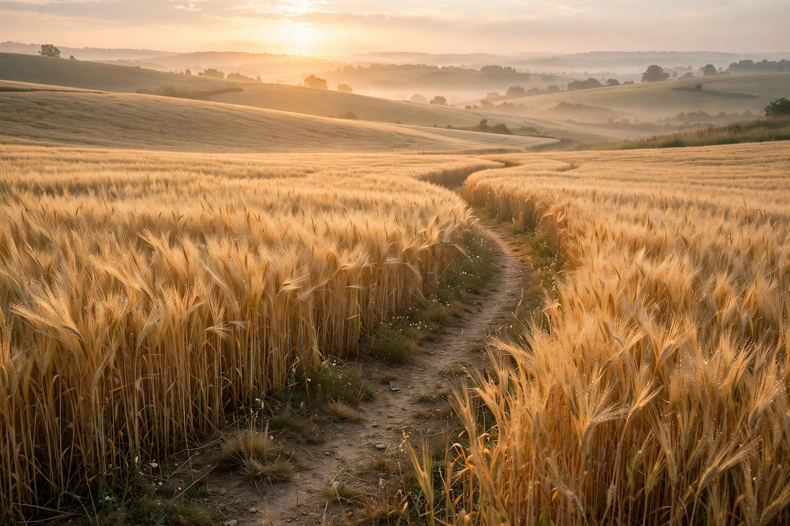
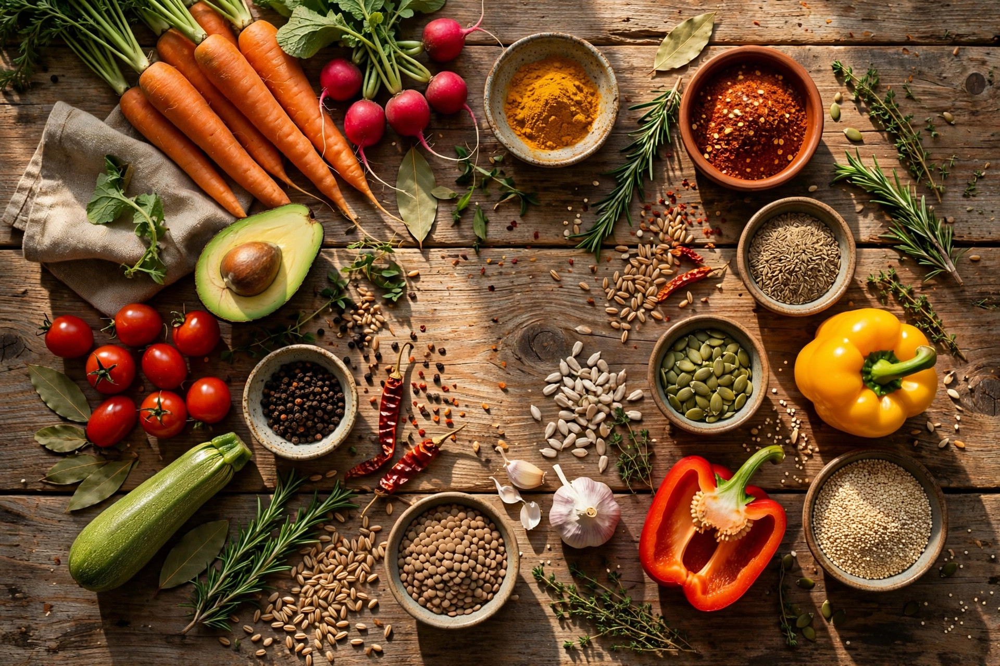

Know the crops behind everyday life.
Fasal is a friendly visual library for the curious. Start with the food on your plate, then follow its story back to seed, soil and season.

Thirteen ways to sort a harvest
From cereals to ornamentals — pick a group and wander.
Cereals
The staple grains that feed the world — wheat, rice, maize and their kin.
Open group →Millets
Hardy, drought-tough small grains making a big comeback.
Open group →Pulses
Protein-packed legumes that also feed the soil nitrogen.
Open group →Oilseeds
Seeds pressed for cooking oils, from mustard to sunflower.
Open group →Vegetables
Everyday kitchen heroes, grown in fields and kitchen gardens.
Open group →Fruits
Orchard treasures — sweet, seasonal, and full of stories.
Open group →Spices
The aromatic seeds, roots and barks that built trade routes.
Open group →Cash Crops
Grown for markets and mills — fibre, sugar and leaf.
Open group →Fodder Crops
Green feed for cattle, goats and the dairy behind them.
Open group →Medicinal Plants
Traditional healing plants, from tulsi to ashwagandha.
Open group →Ornamental Flowers
Blooms for festivals, gardens and everyday joy.
Open group →Ornamental Plants
Indoor greens that clean air and lift moods.
Open group →Trees
The giants — shade, shelter and village landmarks.
Open group →Start with these
Wheat
The golden grain behind every roti.
Potato
Buried treasure from the Andes.
Cotton
Clouds in a boll, thread for the world.
Aloe Vera
Desert leaves hiding cooling gel.
Money Plant
The unkillable desk companion.
Neem
The village pharmacy in tree form.

Start exploring nature today.
From seed to plate — field notes and counting.
Open the field notebook